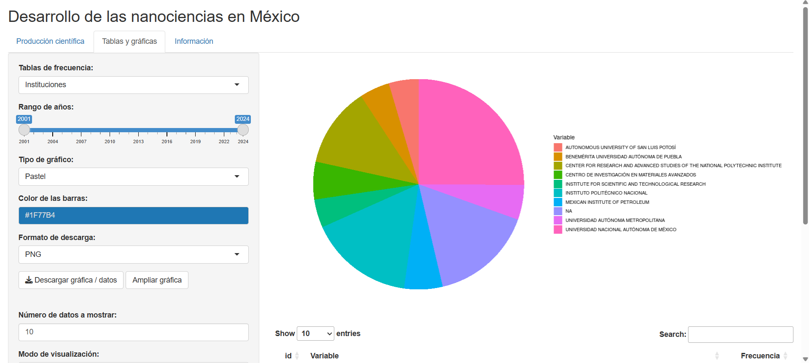
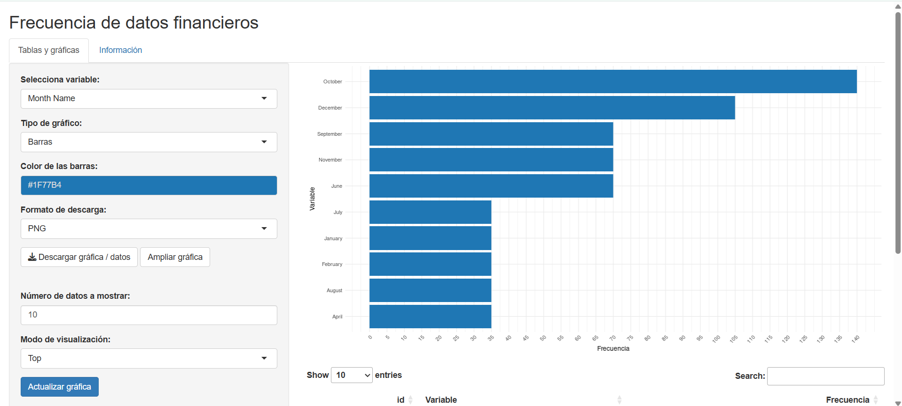
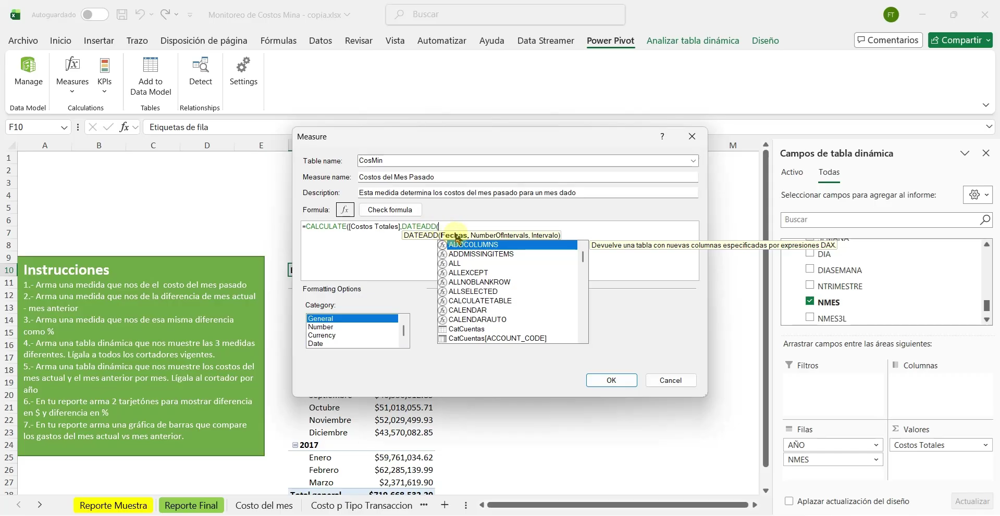

Bienvenidos a la página de Fernando Torres. Soy estudiante de Relaciones Internacionales en proceso de titulación con enfoque e interés en análisis de datos. Mi experiencia incluye el desarrollo de aplicaciones con R Shiny durante mi servicio social en IIMAS. De manera adicional, estoy trabajando de forma independiente en prácticas de análisis de datos utilizando herramientas como SQL, Power BI y Python. También tengo experiencia trabajando en gestión de proyectos, esto como becario de la DGTIC.
55-4547-1533
fernandotorresvazquez90@gmail.com
Esta es una aplicación interactiva desarrollada en R Shiny, lo que hace es leer la base de datos NanoMx_hasta2024_v2 (la cual es un archivo Excel) y graficar la información sobre la producción de documentos científicos en el campo de las nanociencias en México. Las gráficas se muestran en el lado derecho de la página y en el lado izquierdo se ha colocado un panel con botones para manipular la gráfica. Tiene funciones para elegir los años, filtrar por sexo, institución, etc. Esta app está diseñada para buscar y leer específicamente las columnas de "author_institution_country_code_1", "AU_UN", "AU", "DT", "language", "temas", "SO", "eventos" y "oa_status. Es decir que la app puede leer cualquier base de datos siempre y cuando incluya las columnas antes mencionadas. Fue mi trabajo de servicio social en el IIMAS y tardé 6 meses en desarrollarla. Ya ha sido publicada dentro de la página oficial del proyecto institucional PAPIIT IN302623. Para abrir la app solo da clic en los enlaces de "Ver primera app" o "Ver página del proyecto". Te llevará al sitio y solo debes esperar un momento a que cargue, después solo das clic en el botón [Actualizar página]. En caso de que se presente el mensaje Error: An error has occurred. Check your logs, solo debes volver a dar clic en el botón [Actualizar página].

Ver primera app en shinyapps.io
Ver página del proyecto institucional PAPIIT IN302623
Esta segunda aplicación tiene la misma idea de leer una base de datos con la diferencia que no está sujeta a aceptar columnas especificas, sino que es dinámica y acepta cualquier base de datos, por tanto, en la lista desplegable se mostrarán todas las columnas que el archivo incluya. Como muestra se decidió utilizar una base de datos financieros que Microsoft ofrece para realizar pruebas.

Ver segunda app en shinyapps.io
Para el programa de Power BI he realizado practicas con Power Query, Power Pivot y medidas DAX. Dejo links abajo donde muestro mis practicas en YouTube.

Ver video de “Power Query #1” en YouTube
Ver video de “Power Pivot #1” en YouTube
Ver video de “Power Pivot #2” en YouTube
Hace unos años realicé el diplomado en ingeniería de software de la DGTIC, donde aprendimos todo el proceso que existe para crear proyectos web, desde los requerimientos, pasando por diseño ux/ui y bases de datos, hasta finalizar con el framework de Laravel. Como parte del diplomado, a los becarios nos integraron al proyecto de la creación de una pagina web para el Campus Juriquilla de la UNAM. El sitio web estaba enfocado en administrar la matricula estudiantil. Yo fui asignado al equipo de gestión de proyectos donde realicé actividades como administrar la documentación, seguir flujos de trabajo, hacer pruebas de software y tener video reuniones con los clientes (personal de la escuela de Juriquilla) para reportarles los avances del proyecto.